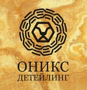
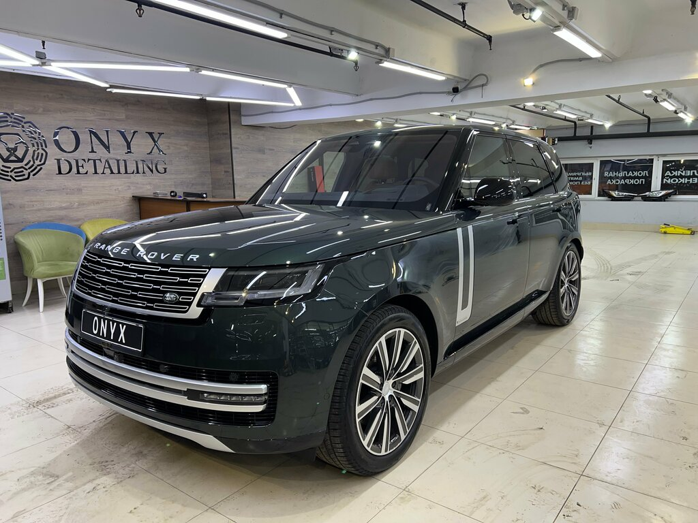
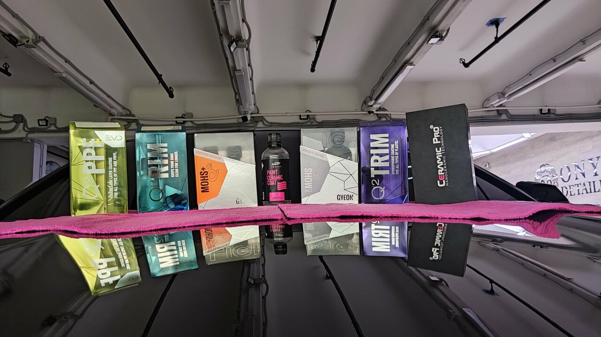

ДЕТЕЙЛИНГ ИНТЕРЬЕРАЧистота, которую
Чистота, которую
приятно чувствовать.
Химчистка салона автомобиля
8 000 ₽
ОНИКСДЕТЕЙЛИНГ+7 968 438-71-46 ↗Сохраняем то, за что вы любите свой автомобиль.
Блеск кузова. Чистоту салона. Ощущение нового.

От бережного восстановления блеска до защиты кузова. Выберите то, что нужно вашему автомобилю.
Химчистка салона автомобиля
8 000 ₽Уход за внешним видом лакокрасочного покрытия
Дополнительная защита и выразительный блеск
Защита уязвимых элементов кузова
Оклейка ClearPlex / DeltaPlex
Выпрямление без окрашивания
Цены указаны в карточке студии. Состав и итоговую стоимость работ согласуйте до начала обслуживания.
Шумоизоляция · Окрас суппортов · Мойка подкапотного пространства · Детейлинг подвески

Фотографии из карточки «Оникс Детейлинг» на Яндекс Картах.
Передвиньте границу, чтобы увидеть визуальную разницу между потускневшей и отполированной поверхностью.
Изображение создано с помощью ИИ для иллюстрации эффекта полировки. Это не реальный кейс «Оникс Детейлинг».
Это ваш выбор. Ваш ритм.
И детали, к которым вы привыкли.
«Оникс Детейлинг» в Лефортове объединяет уход за кузовом, интерьером и комфортом автомобиля. В одной студии можно подобрать полировку, защитные покрытия, оклейку плёнкой и химчистку.
Для более комплексных задач в перечне услуг есть удаление вмятин без окраса, шумоизоляция и окрас тормозных суппортов.
«Сервис на высоте»
Ирина обращалась за снятием бронеплёнки. В отзыве отмечает быстрое выполнение и консультацию о состоянии покрытия.
«К автомобилю бережное отношение»
Станислав рассказывает о комплексном детейлинге, дистанционном согласовании работ и удобной передаче автомобиля.
Избранные отзывы: короткие цитаты и пересказ опыта клиентов. Полные тексты — в карточке студии.
Расскажите студии о состоянии автомобиля и желаемом результате. Для внешнего вида доступны полировка и защитные покрытия, для интерьера — химчистка, для защиты отдельных участков — оклейка плёнкой.
Плёнка — отдельный защитный материал, которым оклеивают поверхность. Керамика — покрытие, наносимое на кузов. Выбор зависит от задач и условий эксплуатации; подходящий вариант и ограничения уточните у мастера.
В студии заявлена услуга PDR — выпрямление вмятин без окраса. Возможность применения метода зависит от повреждения и определяется после осмотра.
Срок зависит от услуги, объёма работ и состояния автомобиля. При записи сообщите модель и задачу, чтобы согласовать время приёма и готовности.
Конкретные сроки гарантии в доступной карточке не указаны. Уточните условия для выбранных материалов и работ перед началом обслуживания.
Москва, проезд Завода Серп и Молот, 1, строение 1. В карточке указана парковка. Удобный въезд можно уточнить по телефону.
Позвоните по номеру +7 968 438-71-46. В карточке указаны оплата наличными, картой, банковским переводом и СБП.
Проезд Завода Серп и Молот,
1, строение 1